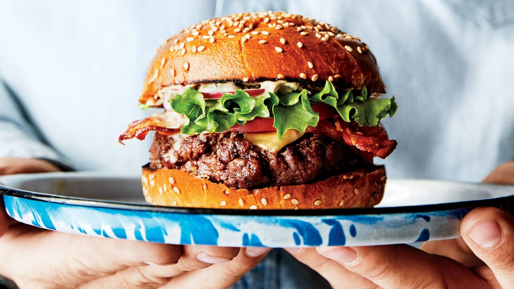

My favortie foods
Burgers,
Fries,
Chinese,
Salads,
Italian Sanwhichs,
strawberries,
and Chicken.
My favorite resurants
Buger tap and shake,
chiplote,
panerna,
cheesecake factory,
PF changs,
and Five guys.
My least favorite foods
Tdr's food
and subway
